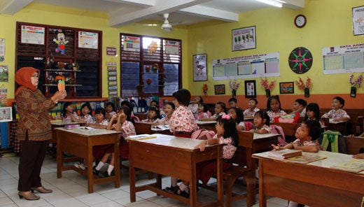
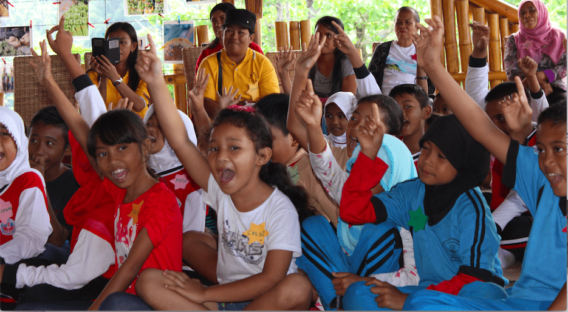
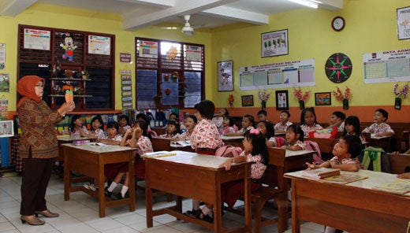
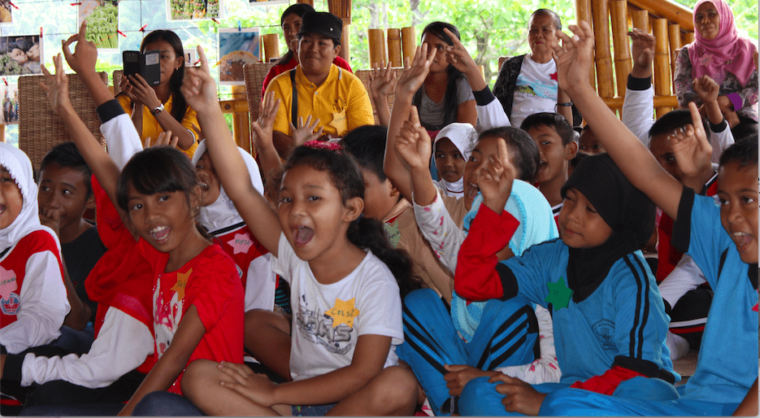

.png)

Pendidikan Berkualitas dalam SDG 4 merupakan salah satu tujuan penting yang terus diupayakan oleh Indonesia. Secara umum, akses pendidikan sudah cukup luas karena banyak anak dapat bersekolah dari tingkat TK hingga SMA. Namun, pemerataan kualitas pendidikan masih menjadi masalah, terutama ketika dibandingkan antara daerah perkotaan seperti Jakarta dengan wilayah pedalaman yang memiliki fasilitas dan tenaga pendidik yang terbatas. Berdasarkan BPS Tahun Ajaran 2024/2025, angka putus sekolah di jenjang SD mencapai sekitar 0,09%, sedangkan di jenjang SMP sekitar 0,54%, dan di jenjang SMA/SMK mencapai 0,86%. Angka ini telah menunjukkan bahwa semakin tinggi jenjang pendidikan, semakin besar kemungkinan siswa berhenti sekolah.
Namun Indonesia telah menunjukkan adanya kemajuan melalui meningkatnya angka partisipasi sekolah dan akses pendidikan dasar yang semakin merata. Selain itu, kini penggunaan teknologi dalam pembelajaran seperti platform digital, kelas online, dan sistem pembelajaran baru telah membantu memperluas akses bagi siswi di berbagai daerah. Walau begitu, jika dibandingkan mengenai fasilitas sekolah, akses internet, dan kualitas guru yang mengajar tentu masih lebih baik di daerah Ibu Kota dibandingkan daerah terpencil. Beberapa daerah masih mengalami masalah dalam minimnya jumlah guru, akses teknologi yang lemah, fasilitas sekolah, dan masih banyak lagi. Pencapaian SDG 4 berjalan tidak merata meski telah ditemukan beberapa kemajuan. Beradasarkan data BPS dan Kementerian Pendidikan, tantangan utama dalam mencapai SDG 4 meliputi ketidakseimbangan antara daerah kota dan daerah terpencil, meningkatnya angka putus sekolah pada jenjang yang lebih tinggi, serta kualitas pembelajaran yang belum merata. Banyak sekolah di wilayah terpencil masih kekurangan guru, fasilitas belajar, dan sarana pendukung lain. Oleh karena itu, meskipun akses pendidikan sudah membaik, Indonesia masih perlu meningkatkan mutu dan pemerataan pendidikan agar tujuan SDG 4 dapat tercapai secara menyeluruh.
 


